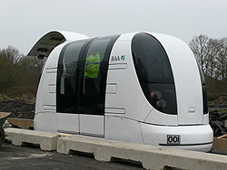
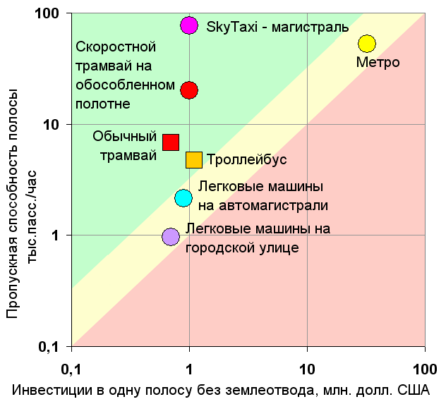
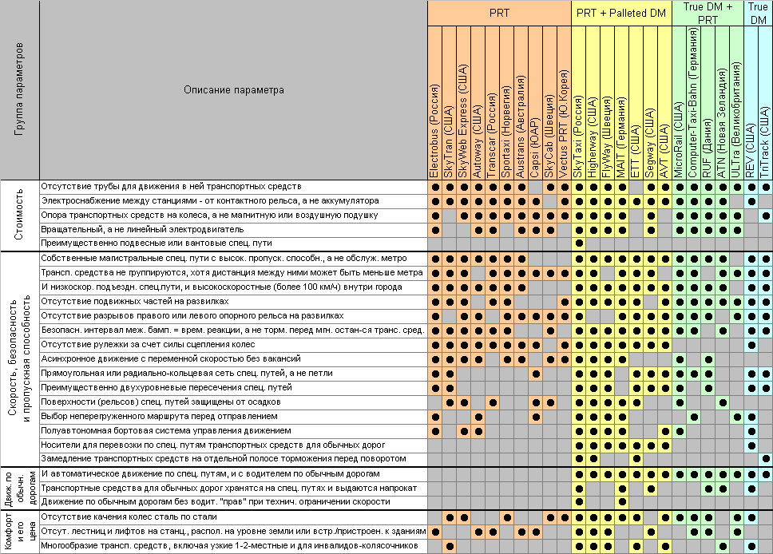

Персональный автоматический транспорт

Персональный автоматический транспорт (PRT) ULTra английской компании Advanced Transport Systems Ltd.
Персона́льный автомати́ческий тра́нспорт — это вид городского и пригородного транспорта, который автоматически (без водителя) перевозит пассажиров в режиме такси, используя сеть выделенных путей.
В настоящий момент в мире действует одна транспортная система PRT. Это сеть ULTra в Лондонском аэропорту Хитроу. Система находится в стадии тестирования и будет открыта для пассажиров в 2010-ом году[1]. Существует также система Morgantown Personal Rapid Transit, отличающаяся от классической концепции PRT увеличенным размером вагона.
Персональный автоматический транспорт сейчас не эксплуатируется, хотя имеются действующие прототипы и опытные образцы, а также два проекта, находящиеся в стадии разработки и изготовления для коммерческой эксплуатации. Это ULTra английской компании ATS в лондонском аэропорту Хитроу и CyberCab голландской компании 2getthere в строящемся с чистого листа городе Masdar около международного аэропорта Абу-Даби. Отличия между ULTra и CyberCab незначительны, хотя друге проекты и концепции персонального автоматического транспорта сильно отличаются друг от друга. ULTra должна начать возить пассажиров в Хитроу уже осенью 2009 года — пути длиной 3,8 км уже построены, несколько кабинок ездят на полигоне, и сейчас началось оснащение путей и станций и тестирование транспортных средств и систем. Видеоролик пробной поездки на ULTra в Хитроу выложен на Youtube: ULTra PRT at Heathrow — POV ride
В середине 1970-х годов система персонального автоматического транспорта CVS в Японии перевезла 800 000 пассажиров. Она была закрыта транспортным министерством под предлогом того, что нарушала железнодорожные правила о безопасной дистанции, хотя истинной причиной закрытия были конструктивные недостатки из-за спешки при проектировании.
В США система группового (8 сидячих мест и 12 стоячих мест в каждом транспортном средстве) автоматического транспорта Morgantown Personal Rapid Transit с 1975 года по настоящее времени перевозит 15 000 пассажиров в день.
Идея персонального автоматического транспорта возникла приблизительно в 1953 году в США, получила общественное признание в середине 1960-х годов и с тех пор переживает спады и подъёмы общественного интереса. Для её энтузиастов очевидно, что традиционные виды городского и пригородного транспорта уступают в конкурентной борьбе с частным автотранспортом и не могут решить острых проблем, вызванных массовой автомобилизацией городов (заторы, загазованность, автокатастрофы и наезды на пешеходов, нехватка автостоянок и гаражей, рост цен на моторное топливо, дефицит общедоступного транспорта, высокие затраты на дорожное строительство и т. д.). Персональный автоматический транспорт представляется решением этих проблем в обозримой перспективе.
Несмотря на достаточно длительную и насыщенную историю и ощутимую финансовую поддержку правительств США, Японии, ФРГ, а затем Евросоюза, и проекты крупнейших корпораций эта прорывная транспортная технология ещё только вступает в стадию выхода на рынок. Наблюдаются все признаки, характерные для этой стадии: высокие затраты, низкие продажи, низкая конкуренция из-за выжидательной позиции крупных потенциальных поставщиков, убытки, неосведомлённость публики и даже лидеров общественного мнения, высокие цены, богатые потребители, большое товарное разнообразие и отсутствие стандартов «де-факто». Из более полусотни сильно отличающихся друг от друга и противоречивых концепций ни одна не утвердилась в качестве ведущей, и происходит периодическая смена фаворитов, изредка получающих правительственные гранты и капиталы инвесторов.
Внедрению персонального автоматического транспорта препятствуют следующие проблемы: отсутствие финансирования, превышение сметы, неоправданное применение железнодорожных правил о безопасной дистанции в некоторых странах, недобросовестная конкуренция других видов транспорта, консерватизм чиновников и директоров компаний и коррупция, недостаточный учёт социальных условий эксплуатации транспортной системы и конструктивные недостатки конкретных концепций (например, конструкция эстакады, влекущая большой вес и себестоимость эстакады).
Не способствуют быстрому внедрению такие черты персонального автоматического транспорта, как сложность, капиталоёмкость, зависимость от землеотвода и конкуренция с городским общественным транспортом, имеющим мощное лобби в местных органах власти, а также отсутствие крупных частных заказчиков. В то же время, растущее разочарование общества в существующих средствах транспорта с их общеизвестными проблемами приближает внедрение персонального автоматического транспорта.
Уже не существует технических проблем, препятствующих внедрению персонального автоматического транспорта, а скептические оценки основываются либо на незнании, либо на использовании худших концепций в качестве примера, либо на сознательном искажении истины. Например, высказываются безосновательные сомнения в безопасности, хотя широко распространенный групповой автоматический транспорт automated people mover (APM)(англ.) зарекомендовал себя как совершенно безопасный вид транспорта (нулевая смертность). В персональном автоматическом транспорте отказоустойчивость будет обеспечена многократным модульным резервированием всех важных систем и многоуровневой (многослойной, эшелонированной) системой отказоустойчивости.
К категории персонального автоматического транспорта относится описываемые ниже Personal Rapid Transit и Dual Mode, а также их комбинации.
Personal Rapid Transit (PRT) (в переводе с американского диалекта английского — персональный быстрый городской общественный транспорт) — это транспортная система, удовлетворяющая следующим семи критериям, установленным The Advanced Transit Association (ATRA):
Кроме того, почти все концепции PRT имеет следующие общие черты:
Dual Mode Transit (в переводе с американского диалекта английского — двухрежимный городской общественный транспорт) или обычно Dual Mode (реже DM) — это транспортная система, в которой электромобили могут ездить как по обычным дорогам под управлением водителя, так и на специальных путях в автоматическом режиме на большие расстояния.
Новым и менее употребительным синонимом PRT является Personal Automated Transport (PAT) (в переводе с английского — персональный автоматический транспорт). Однако часть изобретателей и сторонников включают в понятие Personal Automated Transport как собственно PRT, так и Dual Mode.
Концепции Dual Mode Transit обычно подразделяются на две подкатегории — Palleted Dual Mode (поддонный Dual Mode) и True Dual Mode (истинный Dual Mode). В Palleted Dual Mode электромобили перевозятся на автоматических носителях (pallet). В некоторых концепциях Palleted Dual Mode на автоматических носителях перевозятся обычные автомобили. В True Dual Mode электромобили едут на специальных путях своим ходом, но в автоматическом режиме. В некоторых концепциях смешаны Palleted Dual Mode и True Dual Mode.
К понятию True Dual Mode примыкают Automated Highway Systems (в переводе с английского — системы автоматических шоссе), где модифицированные автомобили могут ездить, группироваться (platooning) и совершать маневры в автоматическом режиме не на специальных путях, а на выделенных полосах движения существующих шоссе, на которые может быть нанесена специальная автоматически считываемая (магнитная) разметка.
В True Dual Mode основная ответственность за безопасные маневры транспортных средств возлагается на инфраструктуру, то есть на полностью изолированные специальные пути и в большинстве концепций на стационарную систему управления (наряду с бортовой). Но в Automated Highway Systems она возлагается на специально оборудованные транспортные средства с машинным зрением, радарами, лазерными датчиками, системами GPS и распознавания образов (транспортных средств, пешеходов, дорожных знаков и разметки) и сложными бортовыми системами управления и взаимодействия транспортных средств.
Automated Highway Systems не относятся к категории персонального автоматического транспорта. В то же время, в некоторых концепциях персонального автоматического транспорта, как и в Automated Highway System, предусматривается движение в автоматическом режиме по обычным подъездным дорогам, зонам станций персонального автоматического транспорта, промышленным и парковым зонам. При этом безопасность движения обеспечивается за счёт малой скорости, ограждений, предупредительной разметки и сигнализации и за счёт поддержания дистанций, позволяющих затормозить перед любым внезапно возникшим впереди транспортным средством, человеком, животным и иным препятствием.
В ряде концепций автоматические носители (с электромобилями, с грузом или порожние) или электромобили могут ездить на тех же специальных путях, что и исключительно автоматические транспортные средства Personal Rapid Transit. Для этих смешанных концепций используют ещё не устоявшийся термин Multimodal Personal [Automated] Transport (MPT) (в переводе с английского — многорежимный или мультимодальный персональный [автоматический] транспорт).
На графике ниже показаны сравнительная стоимость и пропускная способность специального пути персонального автоматического транспорта на примере концепции SkyTaxi.

В таблице, приведенной ниже, чёрными кружками обозначено наличие тех или иных конструктивных особенностей у различных концепций персонального автоматического транспорта.

Отсутствие трубы для движения в ней транспортных средств. В некоторых проектах транспортные средства должны двигаться внутри трубы, защищающей транспортные средства и специальные пути от осадков и посторонних предметов. Несколько проектов предполагают создание вакуума внутри трубы для уменьшения сопротивления воздуха. Однако труба, особенно вакуумная или несущая, очень сильно усложняет и удорожает проект и создаёт психологический дискомфорт[источник не указан 24 дня]. Хотя труба вполне приемлема для магистрального транспорта (метро), она делает невозможным создание густой и при этом дешёвой внутригородской сети путей, изобилующих развилками, поворотами и пандусами[источник не указан 24 дня]. А именно такая сеть необходима для персонального автоматического транспорта с пешеходной доступностью станций[источник не указан 24 дня]. Кроме того, транспортное средство внутри трубы, кроме вакуумной, создаёт эффект поршня.
Электроснабжение между станциями — от контактного рельса, а не аккумулятора. Аккумуляторы дорогие[источник не указан 24 дня], тяжёлые[источник не указан 24 дня], экологически грязные[источник не указан 24 дня], имеют небольшой срок службы[источник не указан 24 дня], требуют подзарядки, имеют небольшую ёмкость[источник не указан 24 дня] и мощность[источник не указан 24 дня], плохо работают при низких температурах. Поэтому их желательно использовать лишь как дополнительный источник энергии[источник не указан 24 дня]: на остановках (где нежелательно[источник не указан 24 дня] иметь контактный рельс под большим напряжением) и при аварийных отключениях электроэнергии[источник не указан 24 дня].
Опора транспортных средств на колёса, а не магнитную или воздушную подушку. Магнитная и воздушная подушки очень дороги, но не дают каких-либо преимуществ при любых возможных скоростях движения персонального автоматического транспорта[нет в источнике].
Вращательный, а не линейный электродвигатель. Линейные электродвигатели шумные (стр. 129 и 131)[нет в источнике], имеют низкий к.п.д.[источник не указан 24 дня] и не имеют сравнительных преимуществ[источник не указан 24 дня]. Специальные пути для применения линейных электродвигателей должны иметь очень точные размеры и требуют большого расхода алюминия [нейтральность?].
Преимущественно подвесные или вантовые специальные пути. Альтернативой является частое расположение опор[источник не указан 24 дня] и жёсткие дорогостоящие [нейтральность?] пролёты между ними, что существенно удорожает проект.
Собственные магистральные специальные пути с высокой пропускной способностью, а не обслуживание метро. Наличие собственных магистральных специальных путей обеспечивает беспересадочное сообщение по всей территории мегаполиса или городской агломерации.[источник не указан 24 дня]
Транспортные средства не группируются, хотя дистанция между ними может быть меньше метра. Некоторые проекты предусматривают физическое сцепление транспортных средств или их группировку средствами системы управления. В условиях PRT, когда каждое транспортное средство движется по собственному маршруту, группировка (как физическая, так и программная) существенно усложняет и удорожает систему управления[источник не указан 24 дня], делает ее медлительной и ненадёжной[источник не указан 24 дня]. Цели группировки (увеличение пропускной способности путей и снижение сопротивления воздуха) вполне достижимы без формирования устойчивых групп — лишь за счет уменьшения дистанций между транспортными средствами[источник не указан 24 дня].
И низкоскоростные подъездные специальные пути, и высокоскоростные (более 100 км/ч) внутри города. Отсутствие высокоскоростных специальных путей делает персональный автоматический транспорт зависимым от магистрального транспорта (метро, электропоезда) и препятствует беспересадочному сообщению по всей территории мегаполиса или городской агломерации [нейтральность?]. Подъездные пути неэкономично[источник не указан 24 дня] делать высокоскоростными, кроме того, низкая скорость движения позволяет снизить шум [нейтральность?]. Использование достаточно разветвлённой сети низкоскоростных подъездных путей позволит сэкономить на количестве полос разгона и торможения.
Отсутствие подвижных частей на развилках. Это позволяет многократно уменьшить дистанцию между транспортными средствами и увеличить их скорость[источник не указан 24 дня]. Однако при этом расстояния между развилками или слияниями должны быть достаточно велики — для своевременного срабатывания рулевых устройств на транспортных средствах.
Отсутствие разрывов правого или левого опорного рельса на развилках. Все проекты[источник не указан 24 дня], в которых транспортное средство подвешено под специальным путём, имеют разрывы правого или левого опорного рельса на развилках и слияниях. Исключение составляют системы с магнитным подвесом, которые имеют другие недостатки[источник не указан 24 дня]. Разрывы рельсов делают невозможными высокие скорости движения и, следовательно, высокую пропускную способность[источник не указан 24 дня].
Безопасный интервал между бамперами равен времени реакции, а не торможения перед мгновенно остановившимся транспортным средством. Различные проекты основываются на различных принципах расчёта минимального безопасного интервала или дистанции.
Асинхронное движение с переменной скоростью без вакансий. В некоторых проектах движение транспортных средств является синхронным, то есть все они движутся с одинаковой постоянной скоростью по всей сети специальных путей, а при слиянии потоков транспортное средство занимает вакансию (vacant slot или vacant point или moving block), запланированную до отправления. Такая организация движения имеет существенные недостатки: огромный объём обрабатываемых данных[источник не указан 24 дня], неустойчивость к сбоям[источник не указан 24 дня], недоиспользование пропускной способности специальных путей[источник не указан 24 дня], нерешённость проблемы входа и выхода из зоны сети с постоянной скоростью[источник не указан 24 дня], большие радиусы поворота на высокой скорости[источник не указан 24 дня]. Синхронное движение пригодно лишь для небольших тихоходных транспортных сетей[источник не указан 24 дня], не способных составить конкуренцию автомобильному транспорту[источник не указан 24 дня].
Прямоугольная или радиально-кольцевая сеть специальных путей, а не петли. Прямоугольная или радиально-кольцевая сеть повторяет расположение улиц, например, в центре Москвы или на Манхеттене, но вместо светофоров на перекрестках используются многоуровневые развязки, которые могут быть гораздо компактнее автомобильных и имеют другую[источник не указан 24 дня] конструкцию. При петлеобразном расположении путей с односторонним движением пересечение перекрёстков осуществляется зигзагом под углом 45 градусов[источник не указан 24 дня] в одном уровне путём слияния с перпендикулярным потоком, либо (реже) организуется круговое движение[источник не указан 24 дня]. Петли не позволяют сделать сеть специальных путей скоростной[источник не указан 24 дня], так как на каждом перекрёстке транспортным средствам приходится изменять направление движения.
Преимущественно двухуровневые пересечения специальных путей. При двух- и многоуровневых пересечениях специальных путей перекрёстки пересекаются без изменения направления движения[источник не указан 24 дня], то есть на высокой скорости и с комфортом[источник не указан 24 дня], в отличие от одноуровневых пересечений[источник не указан 24 дня].
Поверхности (рельсов) специальных путей защищены от осадков. Проблему представляют снег, наледь, листопад, упавшие ветки деревьев, выброшенный из окон домов мусор[источник не указан 24 дня], пыль, грязь и мокрая поверхность рельсов. Защита от осадков осуществляется путем помещения специальных путей вместе с транспортными средствами в трубу[источник не указан 24 дня], сооружения навесов или расположения рельсов внутри кожухов. Одновременно с защитой от осадков осуществляется частичная шумоизоляция.
Выбор неперегруженного маршрута перед отправлением. Выбор неперегруженного маршрута до отправления позволяет предотвратить перегрузку специальных путей, перегрузку станции назначения и образование «пробок». При этом вместо «пробок» из транспортных средств на специальных путях могут образовываться очереди из пассажиров на станциях отправления, что предпочтительнее[источник не указан 24 дня]. Получив отказ, пассажир может выбрать другую станцию назначения недалеко от перегруженной, выбрать другой вид транспорта, отложить или отменить поездку[источник не указан 24 дня]. При синхронном движении с постоянной скоростью и вакансиями эти вакансии обеспечивают неперегруженность[источник не указан 24 дня]. Но выбор неперегруженного маршрута до отправления возможен и при асинхронном движении с переменной скоростью без вакансий[источник не указан 24 дня].
Полуавтономная бортовая система управления движением. В зависимости от местонахождения и роли компьютеров различают автономную или полуавтономную бортовую систему управления движением и систему управления движением без бортовых компьютеров.
Замедление транспортных средств на отдельной полосе торможения перед поворотом. Повороты могут осуществляться как на полной скорости — с большим радиусом, так и с замедлением — с малым радиусом. Большие радиусы поворотов, особенно на высокоскоростных участках специальных путей, плохо вписываются в городскую застройку. Замедление может осуществляться как на главной полосе движения, так и на отдельной полосе торможения. В первом случае происходит замедление транспортных потоков, а во втором случае возникает потребность в довольно длинных отдельных полосах торможения, очереди и разгона. Для городских условий единственным[источник не указан 24 дня] экономически оправданным решением является замедление транспортных средств на отдельной полосе торможения перед поворотом при максимальном удешевлении таких полос.
И автоматическое движение по специальным путям, и с водителем по обычным дорогам. Персональный автоматический транспорт окажется значительно более востребованным[источник не указан 24 дня], если хотя бы некоторые его транспортные средства смогут ездить не только по специальным путям, но и по обычным дорогам, — хотя бы от ближайшей станции, находящейся на специальных путях, до места назначения, где нет специальных путей, и обратно. Это решит проблему «последней мили» и задачу «транспортировки от двери до двери» («кальки» с английского). Такого рода персональный автоматический транспорт называется английским термином Dual Mode.
Транспортные средства для обычных дорог хранятся на специальных путях и выдаются напрокат. В проектах американского происхождения[источник не указан 24 дня], как правило, предусматривается частная собственность на транспортные средства для обычных дорог, а в ряде проектов — и для специальных путей. При этом транспортные средства для обычных дорог хранятся на автостоянках[источник не указан 24 дня]. Это, конечно, крайне[источник не указан 24 дня] расточительно и порождает проблему парковки. Если транспортные средства будут в основном выдаваться напрокат, то, например, в центре города их можно оставлять на специальных путях, откуда они могут быть вызваны в свободное депо в пригороде или на другие станции — для повторного использования другими пассажирами[источник не указан 24 дня].
Движение по обычным дорогам без водительских «прав» при техническом ограничении скорости. Для конкуренции с коллективным общественным транспортом персональный автоматический транспорт должен обслуживать все слои общества[источник не указан 24 дня], в том числе тех, кто не может владеть водительскими «правами»: детей, инвалидов и т. п. Перевозка их по специальным путям в автоматическом режиме не вызывает больших проблем. Но для движения по обычным дорогам желательно ввести техническое ограничение скорости (если нет водительских «прав») и разрешение езды без водительских «прав» в зоне обслуживания ближайшей станции (то есть не по скоростным автомагистралям)[источник не указан 24 дня]. Разрешения на езду без «прав» для водителей мопедов и тихоходных микролитражных автомобилей существуют в большинстве стран[источник не указан 24 дня].
Отсутствие качения колёс сталь по стали. Качение колёс «сталь по стали» создаёт большой шум[источник не указан 24 дня], особенно если плотный транспортный поток движется с большой скоростью[источник не указан 24 дня]. Это неприемлемо для городского транспорта[источник не указан 24 дня].
Отсутствие лестниц и лифтов на станциях, расположенных на уровне земли или встроенных/пристроенных к зданиям. Большинство[источник не указан 24 дня] проектов предусматривает отдельно стоящие двухэтажные станции, оснащенные лестницами и лифтами, что неоправданно[источник не указан 24 дня] дорого. Гораздо дешевле[источник не указан 24 дня], если станции будут встроенными или пристроенными к зданиям, имеющим лифты и лестницы. При этом можно будет совершать поездки даже не выходя на улицу, что удобно[источник не указан 24 дня] в российском климате. Если это невозможно, то станции размером с автобусную остановку должны[источник не указан 24 дня] располагаться на уровне земли за ограждением, а с главным специальным путём соединяться пандусами[источник не указан 24 дня].
Многообразие транспортных средств, включая 1—2-местные и для инвалидов-колясочников. Поскольку в среднем в индивидуальном автомобиле едет чуть больше одного пассажира, то в целях экономии основная масса транспортных средств должна[источник не указан 24 дня] быть одноместными или двухместными с посадкой пассажиров друг за другом. Однако 4-местные транспортные средства, способные вместить инвалида-колясочника, продуктовую тележку, семью и т. п., также будут востребованы[источник не указан 24 дня].
К персональному автоматическому транспорту могут быть применены с оговорками стандарты такой организации, как the Automated People Mover (APM) Standards Committee(англ.). APM(англ.) — это автоматический транспорт, движущийся по эстакаде, перевозящий большие группы пассажиров по фиксированным маршрутам, обычно в аэропортах, в деловых районах городов и в парках отдыха.
В частности, представляют интерес следующие стандарты:
| Параметр | Пределы комфорта (единицы гравитации) | Пределы комфорта (единицы СИ) |
| Максимальное вертикальное ускорение | 0,1 g (вверх); 0,4 g (вниз) | 1 м/с² (вверх); 4 м/с² (вниз) |
| Максимальное боковое ускорение | 0,25 g | 2,5 м/с² |
| Максимальное продольное ускорение | 0,25 g | 2,5 м/с² |
| Максимальное ускорение при торможении | −0,25 g | −2,5 м/с² |
| Ускорение при экстренном торможении | −0,36 g | −3,5 м/с² |
| Максимальный вертикальный рывок | 0,3 g/с | 3 м/с³ |
| Максимальный боковой рывок | 0,25 g/с | 2,5 м/с³ |
| Максимальный продольный рывок | 0,25 g/с | 2,5 м/с³ |